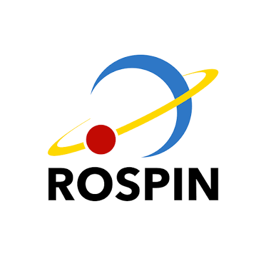
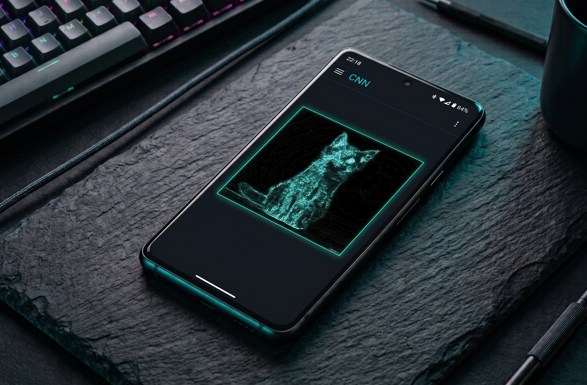
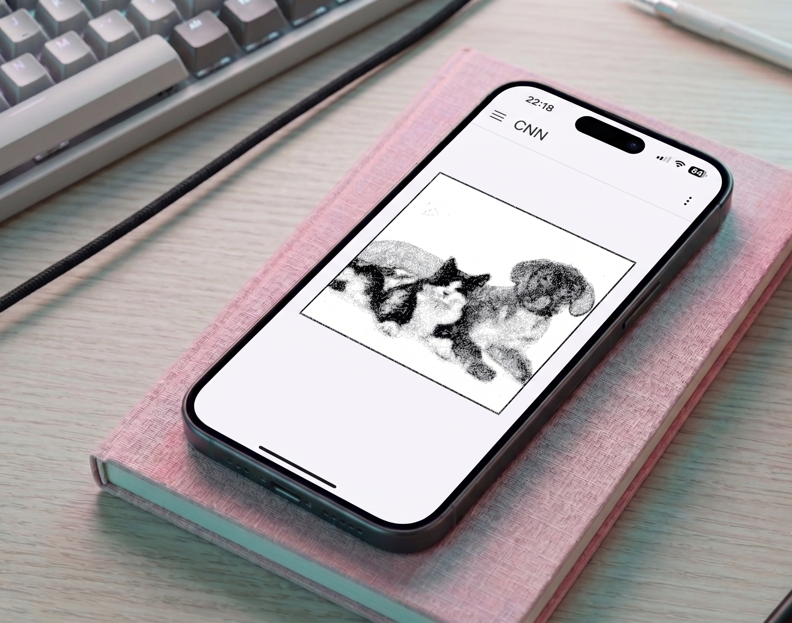
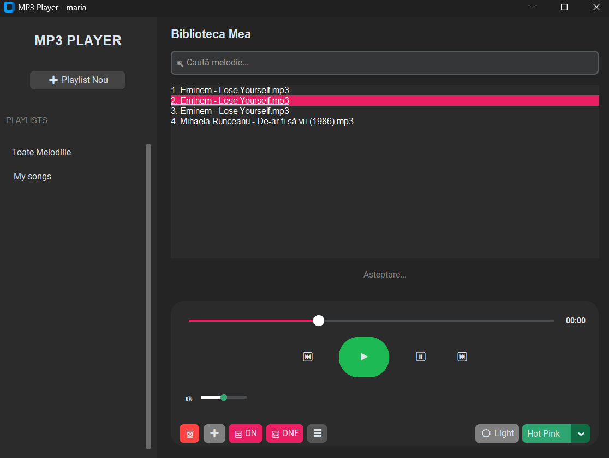
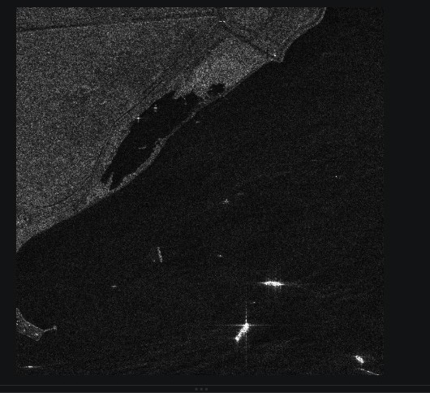
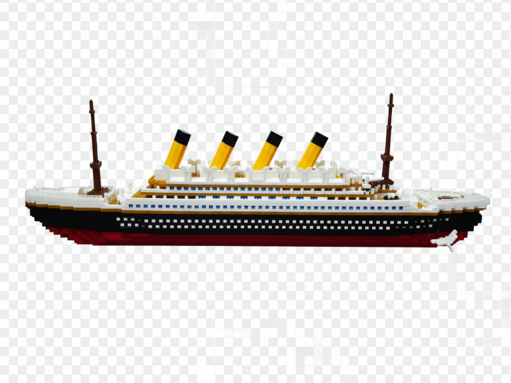
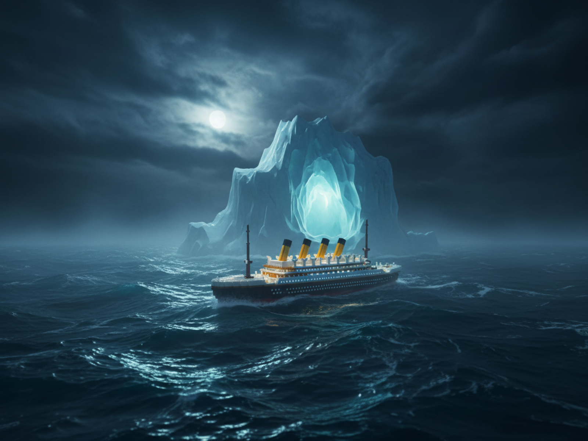
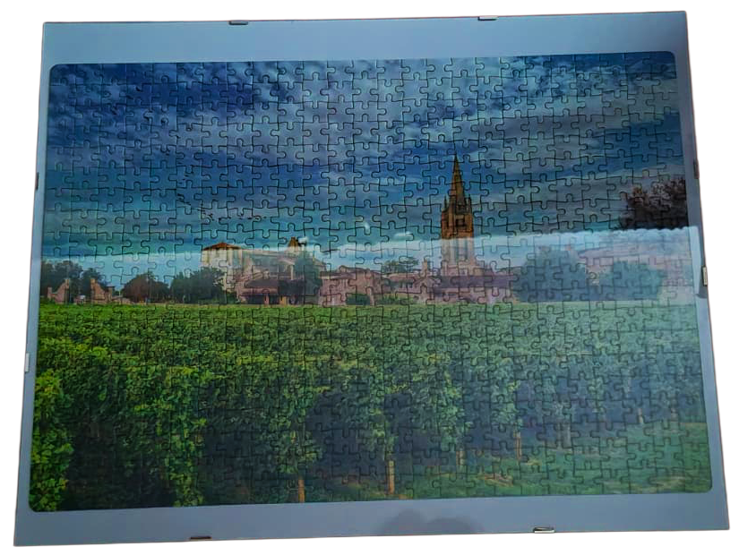

U0 · power-on
Maria-Daniela
Balaceanu
Computer & IT engineering student delivering end-to-end solutions across mobile ecosystems, embedded hardware, and machine learning. Adept at bridging the gap between low-level system design and high-performance software architectures.
01 foundation
Education
"Study hard what interests you the most in the most undisciplined, irreverent and original manner possible."Richard Feynman
You just have to be curious enough to read between the lines and not let the exams get in the way of your education.
Expected June 2028 · Politehnica University of Bucharest
B.Sc. Computers and Information Technology
Faculty of Electronics, Telecommunications and Information Technology (ETTI). It's essentially a deep dive into everything from raw silicon to complex software. The trick is learning to speak the language of the hardware before it gets lost in translation.
- Core Coursework Object-Oriented Programming (OOP), C Programming, Databases (SQL), Operating Systems, Computer Networks, Analog & Digital Electronics, Signals & Systems.
02 evidence
Training & Certifications
"I have always found that the best way to figure out how a clock works is to take it apart."Richard Feynman
Whether it is bouncing signals off a satellite floating in the abyss or strapping a virtual reality headset on, these prove I survived the tinkering process.
Google Romania · Jul 2026

Android Rapid Prototyping Summer School
Developed a scalable Android MVP using Kotlin and Jetpack Compose. Integrated Firebase and Gemini AI (cloud/on-device) for intelligent features, leveraging Coroutines and Flow.
ROSPIN · Jul 2026 - Present

Satellite Data Processing
Analyzed Earth observation data to extract actionable geospatial insights. Leveraged Google Earth Engine and OpenEO for advanced data processing and visualization.
ATHENS Network · Mar 2026 - Apr 2026 · Score: 10/10
Augmented & Virtual Reality for Engineering
Engineered immersive VR simulations and 3D assets using Autodesk Maya and CAD. Prototyped industrial AR/VR applications for operational safety training.
03 momentum
Work & Leadership
"The first principle is that you must not fool yourself - and you are the easiest person to fool."Richard Feynman
What I do when I'm not writing code or building circuits.
Instructor & Sales Consultant · Upkid · Jun 2026 - Present
Upkid
International Programming School where I lead interactive programming demos, translating complex concepts into engaging student activities, and authored customized, actionable performance reports.
Peer Mentor & Year Tutor · LSE · Oct 2025 - Present
Liga Studentilor Electronisti
Mentored 1st-year students, accelerating their academic and social integration. Advised on technical curricula, exam strategies, and university procedures.
04 output
Projects
"The best way to predict the future is to invent it."Alan Kay
Built because sitting still felt like a waste of a working compiler.

Kotlin · ML Kit · Gemini API · Firebase
Neural Net Explorer (Android)
Built a custom computer vision pipeline for Android integrating edge detection, max-pooling, and real-time image classification via Google ML Kit. Integrated the Gemini API for conversational AI and Firebase Remote Config for on-the-fly assistant customization.
view repository →
Swift · SwiftUI · Core ML · Gemini API · Firebase
Neural Net Explorer for IOS(in progress)
Rebuilt the same pipeline natively in SwiftUI, swapping ML Kit for Apple's Core ML and Vision frameworks to run edge detection, max-pooling, and real-time image classification on-device. Kept the Gemini API for conversational AI and Firebase Remote Config for on-the-fly assistant customization, mirrored 1:1 with the Android build.
view repository →
Python · OS Algorithms
MP3 Desktop Player
Co-developed a modular Python audio player optimized for seamless file management. Engineered custom algorithms for recursive directory scanning, dynamic queues, and persistent playlists.
view repository →
Python · PyTorch · YOLO · Sentinel-1 SAR
Ship Detection in the Black Sea
Trained a YOLO-based detector to spot vessels in Sentinel-1 SAR imagery, built during the ROSPIN Summer School's Satellite Data Track. Evaluated the model on precision and recall against held-out scenes, then ran it across the Constanța port area over multiple dates to track vessel activity through time.
view repository →06 exhibit
The Curiosity Museum
"Play is the highest form of research."Albert Einstein
A small physical museum of things I've taken apart and put back together. Lego builds, jigsaw puzzles, and a shared shelf of Hanayama puzzles, including the hardest one they make.

→editing
exhibit no. 1
Titanic
lego · puzzle · 9,000 piecesNine thousand pieces of the ship they called unsinkable, assembled together over more patience than the White Star Line ever showed it. The edit just puts it back where the universe always intended it to go.
_cropped.png)
_cropped.png)
exhibit no. 3
Chinese Garden
lego · 4,000 piecesFour thousand pieces of pagodas, koi ponds, and cherry blossoms, rebuilt tile by tile until the water looked wetter than actual water has any right to.

Proof that gothic architecture is exactly as fiddly in miniature as it looks in real stone - five hundred pieces, every one of them a flying buttress in disguise.

The skyline puzzle that taught us every French roof is a slightly different shade of grey, and that "slightly different" is exactly where an afternoon disappears.

Two thousand pieces of Las Vegas at night, put together over more shared weekends than we'd like to admit. Turns out even a city built on chaos comes together eventually - one piece at a time.

Gaudí never used a straight line if he could help it, which makes for a beautiful cathedral and a deeply unreasonable puzzle. Worth every oddly-shaped piece.

A painting of a gallery, turned into a jigsaw, turned back into a picture on a wall - the closest thing this collection has to a paradox. Rome, recursively.
in progress

Currently a very structured pile of gladiatorial rubble on the desk, which, historically, is accurate.

Michelangelo left one deliberate gap between two fingers. We've left several more, entirely by accident.

Laser-cut plywood, brass rods, and glass beads standing in for planets - Newton's clockwork universe, held together for now with patience and wood glue.
t → ∞ convergence
Let's talk
"We are a way for the cosmos to know itself."Carl Sagan
Everything above converges here, more or less the way worldlines do. Software, hardware, data, or a completely new frontier — I learn fast and am always open to a conversation about a good problem. Say hello.